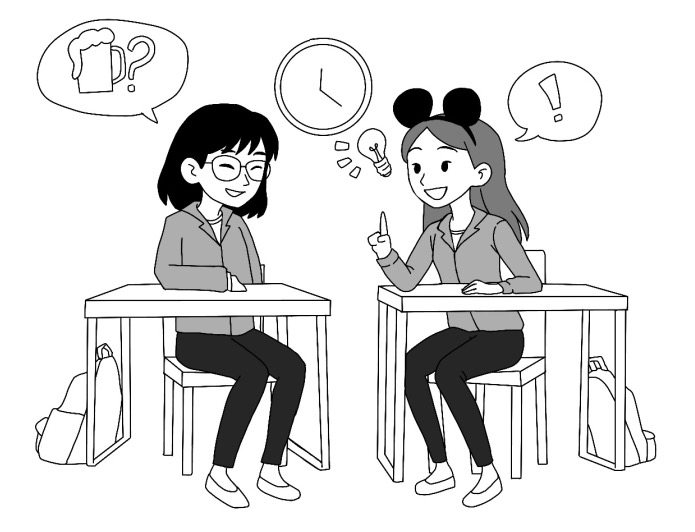

放課後の会話

会話
三連休の予定を話し合う友達の会話。
ミッキー：もうすぐ三連休だねぇ、ケリーちゃん、予定ある？
ケリー：え、三連休？いつ？
ミッキー：来週だよ！知らなかったの？
ケリー：えー、全然気づかなかった！休みの予定何も決めてないや…
ミッキー：じゃあ、どっか行く？あ、そうだ、これ見て！（SNSを見せる）
ケリー：え、何これ？…あ！この前話してた居酒屋、新しい季節限定メニュー出たんだ！
ミッキー：そうそう！どう？興味ある？
ケリー：うん、その定番めっちゃ美味しそう、今度行ってみたいーー
ミッキー：いいね、でも二人だけ行くならつまらないじゃない…誰誘う？
ケリー：ハオランとジョーイは？二人とも最近サークル活動で忙しそうだけど、息抜きになるかも。
ミッキー：確かに、最近彼達見てないし、久しぶりに会おう。じゃあ今電話で聞いてみる。
ケリー：いや、本当行動早すぎ…
ミッキー：先ずハオランにかけてる…あ、出た！ハオラン？今大丈夫？
ハオラン：おー、どうしたの？
ミッキー：来週三連休じゃん？ケリーと居酒屋に行きたいんだけど、一緒に行かない？
ハオラン：え、いいね。ちょうど飲みたいと思ってた。
ミッキー：やった！じゃあジョーイにも聞いてみる！
（電話を切ってジョーイにかける）
ジョーイ：もしもし？ミッキー？何？
ミッキー：来週の三連休、居酒屋行かない？季節限定メニュー出たらしいよ！ケリーとハオランも行く。
ジョーイ：え、いいじゃん！僕も行きたい。
ミッキー：よし四人で決まり！お店予約したら、時間はグループチャットに送るね。
ジョーイ：うん、頼んだ。
（電話を切ってケリーと話す）
ミッキー：二人ともOKだって！
ケリー：よかったねぇ、お疲れ。予約なら、私やっとく？
ミッキー：え、本当？助かる〜！じゃあお願いね。
ケリー：任せて。で、日曜日午後七時どう？
ミッキー：いいよ、次の日も休むし。
ケリー：よし、じゃあまた後で。
ミッキー：うん、楽しみ。